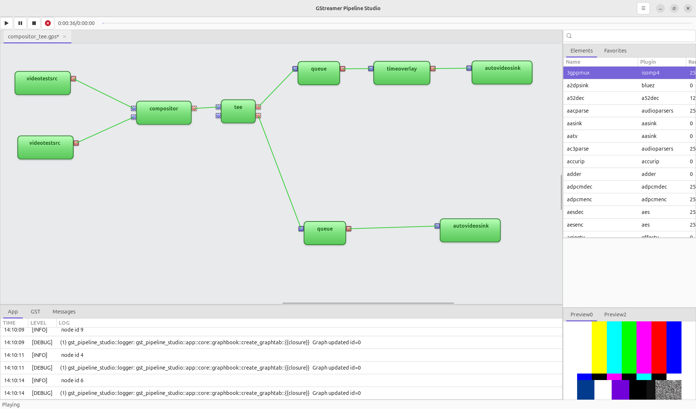

The visual way to build GStreamer pipelines.
Drag, drop, and play multimedia workflows without writing a single command.
Built with Rust and GTK4 for Linux, Windows, and macOS.

Drag and drop GStreamer elements to build complex multimedia pipelines.
Monitor pipeline state and view logs with the integrated debug console.
Fine-tune element properties in real-time during pipeline execution.
Search through all available GStreamer elements with documentation.
Save pipelines to files and share them with your team.
Native GTK4 application for Linux, Windows, and macOS.